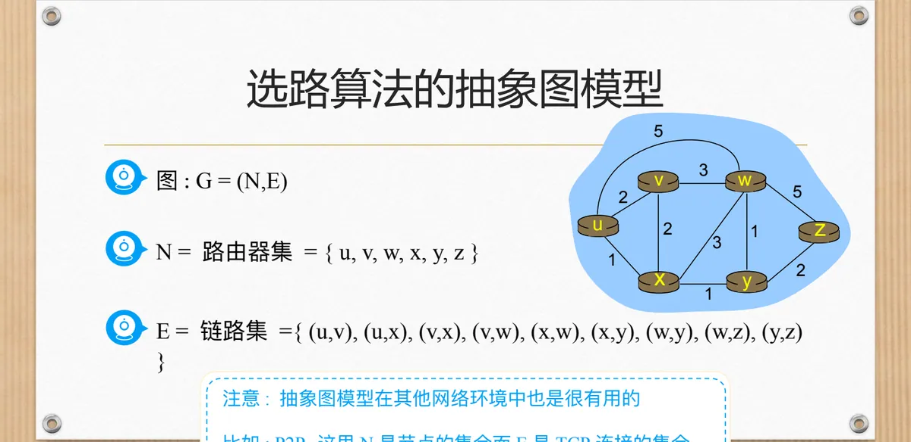
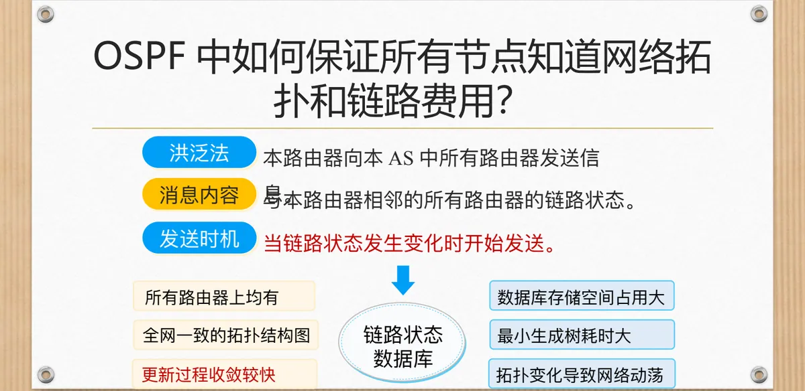
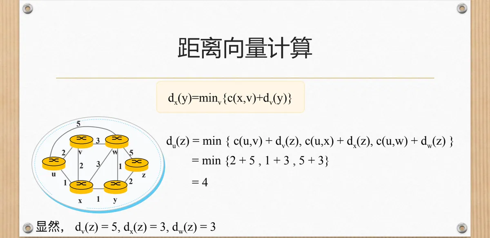
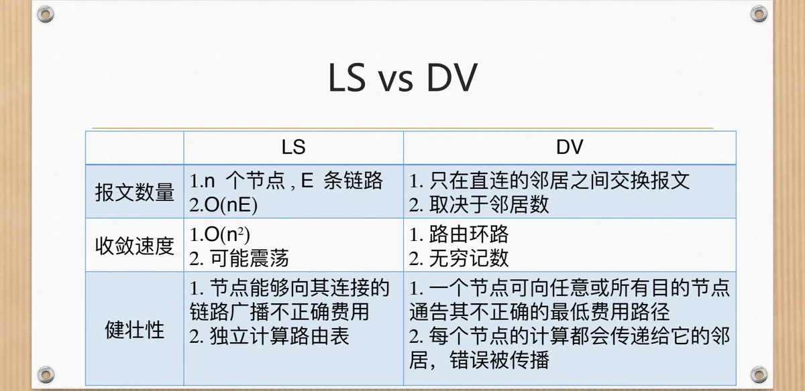
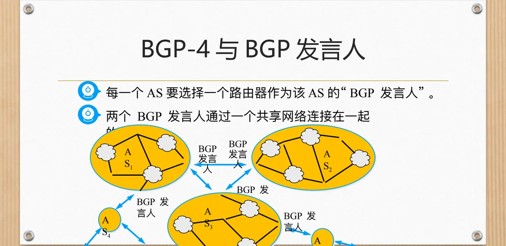
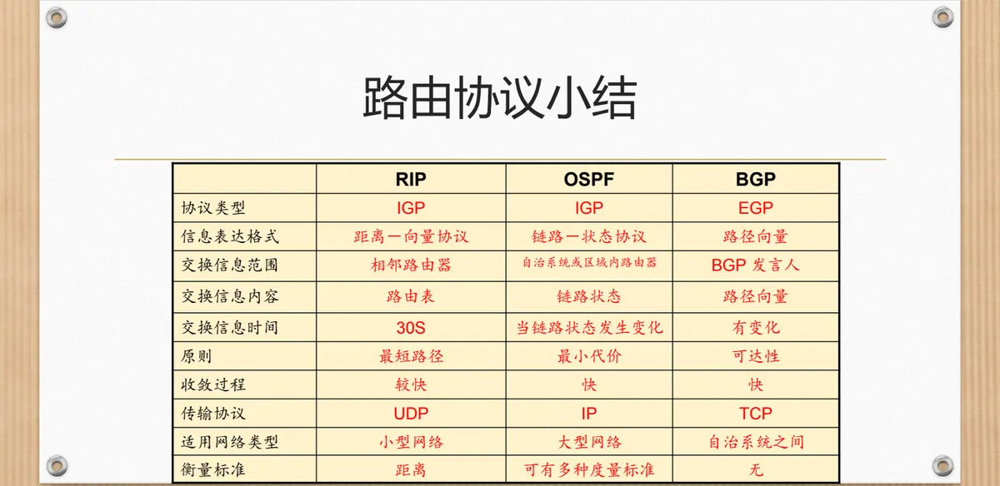

计算机通信与网络 · 第二版讲义 · 第 5 章 网络互联
5.5 网络互联中的选路
分组从源主机到目的主机要经过一连串路由器，路由器凭什么知道该把它交给哪个邻居？靠选路算法算出的转发表。本节先把选路问题抽象成带权图，交代静态路由与动态路由、自治系统与网关协议的分类；再用 Dijkstra 算法讲链路状态选路与 OSPF，用 Bellman-Ford 的思想讲距离向量选路与 RIP；最后讲自治系统之间的路由，看 BGP 怎样交换可达性信息、按什么规则作出选择。
1. 选路问题的提法：从「好的路径」到带权图
选路算法的目的：给定一组路由器以及连接这些路由器的链路，从中找到一条从源路由器到目的路由器「好的」路径。这里要分清三个角色：一台主机「直接」连接到的路由器是它的默认路由器，源主机的默认路由器叫源路由器，目标主机的默认路由器叫目的路由器。所谓「好的」路径通常指费用最低的路径，不过课件还给了一个必须记住的例外：A 和 B 之间的路径费用很低，可是这两个组织作出的路由策略不允许它通行——「最低费用」只是技术上的目标，能否采用还要看策略。
要把「找路径」变成能计算的问题，得先把网络抽象成数学对象：形式化为一幅图 G = (N, E)，N 是路由器集，E 是链路集，课件给出的例子是六个节点与九条链路：
图：G = (N, E)
N = 路由器集 = { u, v, w, x, y, z }
E = 链路集 = { (u,v), (u,x), (v,x), (v,w), (x,w), (x,y), (w,y), (w,z), (y,z) }网络中只考虑无向图，即假定链路上双向的费用一致；这套抽象图模型同样适用于对等网络 P2P（Peer-to-Peer），只不过那时 N 是节点的集合，E 是 TCP 连接的集合。

有了图还要给「费用」下定义：c(x, x′) 是节点 x 和 x′ 之间边的费用，例如 c(w, z) = 5，两点之间没有直连链路时记为无穷大；费用可以是经济上的代价，也可能与链路的带宽以及拥塞状况有关。一条路径的费用是沿途各段费用之和：路径 (x1, x2, x3, …, xp) 的费用 = c(x1,x2) + c(x2,x3) + … + c(xp-1,xp)。于是选路问题就是：节点 u 和节点 z 之间的最低费用路径是什么。
不过算法不能只算对一次。理想的路由算法应当具备高效、稳定、灵活等特性，以应对各种网络拓扑、流量变化以及网络故障：能选择最优路径、自动适应网络变化、均衡负载、降低延迟与丢包率并具备容错性，从而提升性能与可靠性、优化资源并减少维护成本。
2. 静态路由、动态路由与自治系统
按路由信息从哪儿来，路由分成两类：静态路由是管理员手动配置的固定路径，动态路由是路由器自动学习、维护的路径。两者的长短正好互补：
| 类型 | 静态路由 | 动态路由 |
|---|---|---|
| 定义 | 管理员手动配置的固定路径 | 路由器自动学习、维护的路径 |
| 优点 | 简单、资源占用少、安全性高 | 自动适应网络变化，维护工作量小 |
| 缺点 | 无法自动适应网络变化，维护困难 | 占用资源较多，可能出现环路或错误 |
| 适用场景 | 小型、结构简单、变化少的网络 | 大型、结构复杂、变化频繁的网络 |
静态路由的「安全」来自它的死板：路径由人写死，外部变化改不动它，但网络一有变动就得人工去改，规模一大就维护不动；动态路由相反，路由器之间交换信息、自动算出路径，省了人力，代价是占用资源，而且算法本身可能出错。实际网络常常两者并用，本节的 Dijkstra 算法和距离向量算法都是动态路由的基础。
动态路由要面对的第一个难题是规模：若每个路由器都要知道全网拓扑并为每个目的网络精确选路，计算量和路由表都会大得无法承受。解决办法是分层，具体形式就是自治系统 AS（Autonomous System）——一个 AS 对外表现为使用统一路由策略的网络集合。每个 AS 有唯一的 AS 编号（ASN），内部使用内部网关协议 IGP（Interior Gateway Protocol），之间使用外部网关协议 EGP（Exterior Gateway Protocol）。
| 类别 | IGP（内部网关协议） | EGP（外部网关协议） |
|---|---|---|
| 定义 | AS 内部使用的路由协议 | AS 之间使用的路由协议 |
| 应用范围 | 单一自治系统内部 | 不同自治系统之间 |
| 代表协议 | RIP、OSPF、IS-IS 等 | BGP（边界网关协议） |
| 设计目标 | 快速收敛、易配置 | 可扩展性强、策略控制能力强 |
从设计目标可以看出分工：IGP 追求在本自治系统内部快速、简单地收敛，因为内部拓扑是「自己家的」，可以要求全网共享信息；EGP 追求可扩展性与策略控制能力，因为它面对成千上万个互相独立、彼此还有商业关系的自治系统。
3. 链路状态选路与 Dijkstra 算法
链路状态选路算法的前提非常明确：所有节点都知道网络拓扑和链路费用——通过链路状态广播获得信息，因而所有节点具有同一个完整的视图。在这个共同视图上，每个路由器独自计算从自己到网络中所有其他节点的最低费用路径，结果就是一张转发表。计算用 Dijkstra（迪克斯特拉）算法完成，特征是迭代：经过 K 次迭代后就知道到 K 个目的节点的最低费用路径。先认四个符号：
c(x,y)：从节点 x 到节点 y 的链路费用；如果 x 和 y 不是直连的，则 c(x,y) = ∞
D(v)：随着算法进行本次迭代，从源节点到目的节点 v 的最低费用路径的费用
p(v)：从源节点到 v 沿着当前最低费用路径的前一个节点
N'：节点子集。v 在 N' 中，如果从源节点到 v 的最低费用路径已知算法的思路是逐轮「认领」节点：每轮从不在 N′ 中的节点里挑出 D 值最小的加入 N′，表示到它的最低费用路径已经确定；再以它为中转修正尚未加入 N′ 的邻居，若经过它更便宜就更新 D 值，并把 p(v) 记成这个中转节点。课件中从 u 出发的例子如下表，p 一列写成「费用, 前一跳」：
| 步骤 | N′ | D(v), p(v) | D(w), p(w) | D(x), p(x) | D(y), p(y) | D(z), p(z) |
|---|---|---|---|---|---|---|
| 0 | u | 2, u | 5, u | 1, u | ∞ | ∞ |
| 1 | ux | 2, u | 4, x | — | 2, x | ∞ |
| 2 | uxy | 2, u | 3, y | — | — | 4, y |
| 3 | uxyv | — | 3, y | — | — | 4, y |
| 4 | uxyvw | — | — | — | — | 4, y |
| 5 | uxyvwz | — | — | — | — | — |
第 0 步只把源节点 u 放进 N′，D 值就是 u 到各邻居的直连费用：v 是 2、x 是 1、w 是 5，不相邻的 y 和 z 仍是无穷大。第 1 步在 N′ 之外选出 D 值最小的 x（费用 1）加入，再用 x 修正邻居的 D 值：w 由 5, u 改成 4, x，y 由无穷大改成 2, x，这就是「经过 x 更便宜就更新」。第 2 步选出 y（费用 2），把 w 降为 3, y，并第一次算出 z 的费用 4, y；第 3、4 步加入 v 和 w，第 5 步把 z 加入 N′。
还有一件事藏在 p(v) 里：沿着每个节点的前一跳回溯到源节点，就能恢复出整棵最短路径树；课件指出，通过跟踪前一跳节点可以构造最短路径树，再由这棵树读出 u 的转发表——去 v 走 (u, v)，去 x、y、w、z 都走 (u, x)。于是链路状态算法的完整链条是：前提是知道拓扑和链路费用，方法是迭代，目标是产生某节点的转发表。
（1）Dijkstra 算法的复杂性
第一次迭代需要搜索所有的 n 个节点，才能确定那个不在 N′ 中且具有最低费用的节点 w；把每轮搜索的节点数加起来，所有迭代中需要搜索的节点总数为 n(n+1)/2，所以链路状态算法在最差情况下的复杂性为 O(n²)。课件还指出，该算法若换用一种叫作堆的数据结构实现，计算复杂性可降为 O(m log n)，其中 m 是链路数。
4. 链路费用随流量变化引起的振荡及对策
链路状态算法有一个很实际的麻烦：链路费用可以与带宽以及拥塞状况有关，而拥塞又取决于流量走哪条路，算法和网络状态之间因此形成了反馈回路。课件示意图描绘的就是这种反复：各节点按当前费用算出路径，流量转移到「便宜」的链路上；这条链路一拥塞，费用升高，各节点重新计算路由，流量又涌回原来那条链路；路由在两套方案之间来回摆动，这就是振荡。
课件的主要对策只有一条：强制链路费用不依赖于所承载的流量，费用成为拓扑的固有属性之后，算出的最优路径也就固定下来；但课件明确指出它无法解决高拥塞的问题，因此不可接受；辅助手段有两条：确保所有路由器不同时运行链路状态算法（因特网上的路由器能够自同步，各路由器周期性地广播链路状态，运行时刻会逐渐对齐），以及随机化路由器发送链路通告的时间。
5. 因特网中的链路状态选路：OSPF 协议
把 Dijkstra 算法真正用到因特网上的协议，是开放最短路径优先 OSPF（Open Shortest Path First）。课件先对名字做澄清：「Open（开放）」意味着 OSPF 不是受某一家厂商控制的，而是公开发表的；「SPF（最短路径优先）」意味着它使用 Dijkstra 算法——OSPF 只是最早使用最短路径算法的路由协议的名字，并不代表其他路由选择协议就不是最短路径优先。此外，OSPF 是分布式而不是集中式协议，每个路由器自己算自己的转发表。
课件的第二个重点是 OSPF 的三个要点。交互范围与方法：OSPF 协议消息采用泛洪法发送，并且限于本自治系统域内。交互信息内容：消息里装的是与本路由器相邻的所有路由器的链路状态，而不是完整的路由表——这一点与后面要讲的 RIP 正好相反。交互时机：仅当链路状态发生变化时才采用泛洪法发送，平时没有周期性的整表交换。
这三条要点合起来，保证了每个路由器最终都掌握同一份资料：路由器之间频繁地交换链路状态信息，因此所有的路由器最终都能建立一个链路状态数据库；这个数据库实际上就是全网的拓扑结构图，在全网范围内一致，并且能较快地更新，使各路由器及时更新路由表，收敛得快是 OSPF 的重要优点。课件也列出了代价：计算最小生成树耗时大，拓扑变化导致网络动荡，数据库的存储空间占用也比较大。

课件对 OSPF 还有几点补充说明。第一，OSPF 不强制如何设置链路权值的策略，但提供对给定链路权值集合确定最低费用路径的机制。第二，即使链路状态没有变化，也每 30 分钟广播一次链路状态。第三，链路状态以 OSPF 通告的形式封装在报文中，由 IP 分组承载，协议号为 89。第四，路由器之间的交换都经过鉴别（简单的、MD5 的），以确认通告的真实性、防止伪造和篡改，通告都带序列号以防重放攻击。第五，支持多条相同费用的路径，也支持多播选路、层次路由和负载均衡。
（1）层次 OSPF：把一个自治系统再划分成区域
自治系统本身也可能很大，于是 OSPF 又做了一层划分：它将一个自治系统再划分为若干个更小的范围，叫作区域，每个区域都有一个 32 bit 的区域标识符；区域也不能太大，一个区域内的路由器最好不超过 200 个。划分区域的好处是把洪泛法交换链路状态信息的范围局限于每一个区域而不是整个的自治系统，减少了全网通信量；区域内部的路由器只知道本区域的完整拓扑，不知道其他区域的拓扑。上层的区域叫作主干区域（backbone area），标识符为 0.0.0.0，作用是连通其他在下层的区域。
6. 距离向量选路算法
与链路状态相对的另一条技术路线是距离向量（Distance Vector）选路算法，其思想来自 Bellman-Ford 方程：每个节点只和直接相连的邻居交换信息，交换的内容是自己的距离向量，即一张「目的、经由、开销」组成的表。节点收到邻居的通告后按下式更新自己到各目的节点的最低费用：
dx(y) = min_v { c(x,v) + dv(y) }式子的意思是：x 到 y 的最低费用，等于取遍 x 的所有邻居 v，在「x 到 v 的费用 + v 到 y 的最低费用」中挑一个最小的；邻居之间交换各自的距离向量是距离向量算法唯一的通信形式，这决定了它的开销取决于邻居数而不是全网节点数。课件用同一个例子做了演算：
du(z) = min { c(u,v) + dv(z), c(u,x) + dx(z), c(u,w) + dw(z) }
= min { 2 + 5 , 1 + 3 , 5 + 3 }
= 4其中 dv(z) = 5、dx(z) = 3、dw(z) = 3，都是邻居曾经通告给 u 的、各自到 z 的最低费用；三项分别算出 7、4、8，取最小得 4，于是 u 认定到 z 最省的走法是先把分组交给 x。u 只需相信邻居报来的数，这既是距离向量算法开销小的原因，也是它容易出问题的原因：邻居报来的数一旦不对，错误就会顺着邻居关系一路传下去。

把这套计算落到路由表上，就是课件的路由表更新算法。路由器 X 得到相邻路由器 Y 的路由表，从而得知 Y 到网络 Z 的最短距离为 N；如果 X 没有到 Z 的路由条目，则添加一条经由 Y 到 Z、距离为 N+1 的条目；如果 X 已有到 Z 的条目、其距离为 M，那么当 M > N+1 时把它更新为经由 Y 到 Z、距离 N+1，否则不更新。那个「+1」就是 X 到邻居 Y 这一段链路的费用，在 RIP 里就是 1 跳。
7. 距离向量的软肋：坏消息传得慢与 RIP
距离向量算法的优点与缺点来自同一个事实：每个节点只看邻居。链路费用下降时是「好消息传得快」：t0 时刻 y 检测到链路费用变化，更新自己的距离向量并通知邻居；t1 时刻 z 收到更新报文，更新自己的距离向量表，算出到 x 的新的最低费用并向邻居发送新距离向量；t2 时刻 y 收到 z 的更新，发现最低费用没有变化，不再发送报文。
链路费用由低变高或链路断开时则是「坏消息传得慢」。问题出在邻居之间互相「借道」：y 发现经 x 的路径变贵了就去问 z，而 z 此前的路径正是经 y 到达 x 的，于是 z 报给 y 的仍是过期的信息，y 据此以为可以绕经 z，把距离改成大一点的值再通告出去，z 收到后又把自己的距离加 1，如此往复。距离一步一步往上爬，直到超过协议允许的最大值才结束，这就是无穷计数，其间形成的互相依赖构成路由环路，分组来回兜圈子。
课件给出的对策是毒性逆转：如果 z 通过 y 选路到达目的地 x，那么 z 就通告 y，它到 x 的距离是无穷大，这样 y 就不会通过 z 到达 x。但课件明确写了一句结论：毒性逆转并没有解决无穷计数问题，它只能破除两节点之间的直接环路，遇到更长的环路仍会缓慢地计数上去；工程上真正管用的是给距离设一个上限，超限即视为不可达，这正是 RIP 的做法。
因特网上的距离向量协议是路由信息协议 RIP（Routing Information Protocol），它是基于跳数的距离向量协议：相邻两点之间的链路费用为 1 跳，最大费用限制为 15，超过 15 跳的目的网络被认定为不可达。RIP 基于 UDP，端口为 520；选路更新通告周期为 30 秒；邻居离线判定周期为 180 秒，连续几个周期收不到某个邻居的消息才判定它已离线。用 UDP 承载、周期性把整张路由表发给邻居，使 RIP 简单易配，代价是收敛较慢、规模有限。

课件最后把两类算法比了三个维度。报文数量：LS 在 n 个节点、E 条链路的网络里要把链路状态发给所有节点，开销为 O(nE)；DV 只在直连的邻居之间交换报文，开销取决于邻居数，在这一点上更省。收敛速度：LS 的复杂度为 O(n²) 并且可能震荡，DV 会出现路由环路和无穷计数，两者都不完美。健壮性：LS 中一个节点能向它连接的链路广播不正确的费用，但每个节点独立计算路由表，错误影响有限；DV 中一个节点可以向任意或所有目的节点通告其不正确的最低费用路径，而且每个节点的计算都会传递给它的邻居，错误会被传播。
8. 自治系统之间的路由与 BGP
课件第 173 张的结论是：转发表是由 AS 内部选路算法和 AS 间选路算法共同决定的——内部算法为内部目的地址设置转发表信息，而对于外部目的地址，则由内部算法把分组送到某个网关，由 AS 间算法告诉它该走哪个网关。于是问题来了：AS1 中的路由器收到一个目的地址在 AS1 之外的数据报，应该转发到哪一个网关路由器？这需要 AS1 知道通过 AS2、AS3 分别可以到达哪些目的地，并把这些可达性信息向 AS1 中的所有路由器传播。
课件用两个场景把推理走了一遍。场景 1：从源到目标仅有一条路可选。假设 AS1 从 AS 间选路协议知道子网 x 经 AS3（网关 1c）可达，而通过 AS2 不可达，AS1 就把这条可达信息向它的所有路由器广播；路由器 1d 由此知道，自己的接口 I 在到路由器 1c 的最低费用路径上，于是把表项 (x, I) 放入转发表。这里的关键是分工：「经 AS3 可达」由 AS 间协议给出，「到 1c 走哪个接口」由 AS 内部协议给出。
场景 2：从源到目标有多条路可选。假设 AS1 知道子网 x 既可通过 AS3 到达，也可通过 AS2 到达，路由器 1d 就必须决定通过网关 1b 还是 1c 转发，这同样是 AS 间选路协议必须解决的问题。课件的推理链是：先从 AS 间协议知道经多个网关可达子网 x；再用 AS 内部协议的选路信息决定每个网关的最低费用路径的费用；然后采用热土豆选路，即选择具有最小的最低费用的那个网关；最后从转发表决定通向该网关的接口 I，即 (x, I) 表项。
把这种做法用到整个因特网，就暴露出 AS 间路由的困境，课件列出的问题是：AS 间如何获取可达信息？AS 内部路由如何获取可达信息？AS 间的路由策略如何选择？「好」路由如何确定？以及在规模很大时 AS 间难以选择最佳路由。回答这些问题的是边界网关协议 BGP（Border Gateway Protocol），课件介绍的是 BGP-4：从相邻 AS 获取子网可达性信息，向该 AS 内部传播这些信息，再基于可达性信息和 AS 策略决定到达子网的「好」路由。课件同时强调：BGP 只能力求寻找一条能够到达目的网络且比较好的路由（不能兜圈子），而并非要寻找一条最佳路由。
BGP 的运作靠一个专门的角色：每一个 AS 要选择一个路由器作为该 AS 的「BGP 发言人」，两个 BGP 发言人通过一个共享网络连接在一起。这样，AS 之间的路由信息只需由少数边界上的路由器掌握和交换，内部路由器不必知道全世界的路由。

BGP 发言人之间交换的是路径向量（path vector），通告的内容不是费用，而是一串自治系统编号。课件的层次化例子是：AS2 的 BGP 发言人通知主干网的 BGP 发言人「要到达网络 N1、N2、N3 和 N4 可经过 AS2」，主干网还可以发出通知「要到达网络 N5、N6 和 N7 可沿路径（AS1, AS3）」。这种「连同路径一起通告」的做法让接收方一眼就能看出这条路由经过了哪些 AS，既便于按策略取舍，也便于发现通告里是否出现了自己的 AS 编号——若有，说明会绕环，直接丢弃。
再看通告本身。当路由器通告一个前缀时，它随着前缀包含一些 BGP 属性：前缀 + 属性 = 「路由」。课件强调两个重要属性：AS-PATH 包含前缀的通告已经通过的那些 AS，例如 AS 67、AS 17；NEXT-HOP 指明到下一跳 AS 的具体的路由器，因为从当前 AS 到下一跳 AS 之间可能存在多条链路。网关路由器收到通告时，用输入策略决定是否接收或过滤该路由。课件还有一个例子：AS2 把内部若干个前缀（如 192.168.1.0/24 与 192.168.244.0/22）聚合为一个，向 AS1 只通告单一前缀 192.168.0.0/16，并负责转发指向该前缀的数据报；聚合压小了全局路由表，代价是 AS2 要自己承担内部明细的转发。AS1 收到 AS2 和 AS3 的通告后把它们发布到 AS1 内部，内部路由器据此更新路由表，这分别对应 AS 之间的 eBGP 会话与 AS 内部的 iBGP 会话。
BGP 消息里装的就是这些「路由」。课件的例子是：Prefix 为 138.16.64.0/22，AS-PATH 为 AS3、AS131，NEXT-HOP 为 201.44.13.125。路由器得知一个新前缀时，为该前缀在转发表中创建一个表项，而 NEXT-HOP 是 AS-PATH 起始的那台路由器接口的 IP 地址；课件把表项形式固定为：前缀 138.16.64.0/22、AS-PATH 为 AS1 与 AS2、NEXT-HOP 为 201.44.13.125。BGP 给出的不是「距离」，而是「到哪里、经过谁、先交给谁」三件事。
9. BGP 的路由选择与三种路由协议的对照
有了路径向量，接收方往往能在同一个前缀上拿到多条「路由」：对前缀 x（138.16.64.0/22），一个路由器可能同时收到「AS1 AS2 to 138.16.64.0/22」和「AS2 to 138.16.64.0/22」这样的通告，应该选择哪一个？如果经过筛选后有两条或更多条同样好的最佳域间路由，课件给出的办法是采用热土豆思想，选择距离 NEXT-HOP 最近的那条路由——对外的部分由别人负责，自己这一跳越省越好。
选定之后，剩下的就是把结果写进转发表：先获取 NEXT-HOP 属性（例子中是 111.99.86.55），再获取最短路径（例子中是 1c—1b），然后确定端口（例子中是端口 4），最后加入转发表，一条 (138.16.64.0/22, port 4) 的表项就形成了。BGP 提供的 NEXT-HOP 最终要交给 AS 内部的选路算法落实成具体接口，这正是「转发表由两种算法共同决定」的落地。
课件的路由选择规则是三条：第一，优选路由策略中优先级最高的路由；第二，优选 AS 路径（AS_Path）最短的路由；第三，热土豆选路。当以上全部相同时，这些路由称为「等价路由」，可以负载均衡。规则一说明策略优先于距离，规则二用 AS_Path 的长短避免绕远，规则三才是纯粹的「就近出手」，三条规则的顺序不能颠倒。

这张表把两条线索合到了一起：算法线索是链路状态与距离向量，结构线索是自治系统内部与之间。
本节小结
- 选路算法的任务是在带权图 G = (N, E) 上寻找从源路由器到目的路由器的最低费用路径，并且要受组织之间路由策略的约束；理想的路由算法应高效、稳定、灵活，兼顾最优路径、自动适应、负载均衡与容错。
- 静态路由简单、安全但不会自适应，动态路由自动学习但占用资源并可能出错；因特网按自治系统 AS 分层，每个 AS 有唯一的 ASN，内部用 IGP（RIP、OSPF、IS-IS），之间用 EGP（BGP）。
- 链路状态算法要求所有节点通过链路状态广播掌握同一份全网视图，再用 Dijkstra 算法迭代求出最低费用路径并产生转发表；搜索节点总数为 n(n+1)/2，最差复杂性 O(n²)，改用堆可实现 O(m log n)；费用若依赖所承载的流量会使算法振荡，对策是让费用与流量无关、错开运行时刻并随机化链路通告时间。
- OSPF 是分布式的链路状态协议，用泛洪法把相邻路由器的链路状态限制在本自治系统内、仅在链路变化时发送，各路由器据此建立全网一致的链路状态数据库；它每 30 分钟重发一次、由 IP 承载（协议号 89）、经鉴别并带序列号，支持等价多路径，还可把 AS 再划分为区域，主干区域标识符为 0.0.0.0。
- 距离向量算法只与邻居交换距离向量，按 dx(y) = min{c(x,v) + dv(y)} 计算，更新规则是「M > N+1 才改、没有条目则添加」；它好消息传得快、坏消息传得慢，会出现无穷计数与路由环路；RIP 基于跳数：UDP 端口 520，每 30 秒通告一次，180 秒判定邻居离线，最大 15 跳。
- AS 之间的可达性由 BGP-4 提供：每个 AS 选一个 BGP 发言人，与相邻 AS 的发言人交换带 AS-PATH 与 NEXT-HOP 属性的路径向量；选择路由时依次考虑策略优先级、AS 路径最短、热土豆，全部相同则为等价路由，可负载均衡。